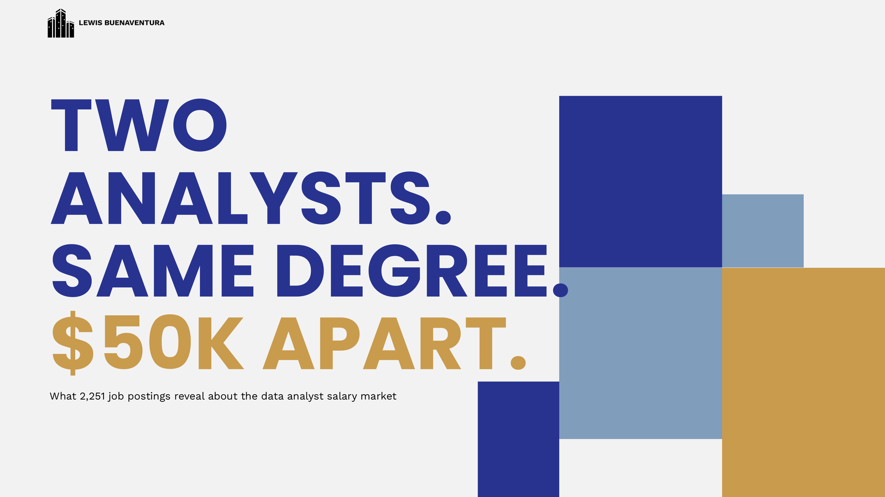
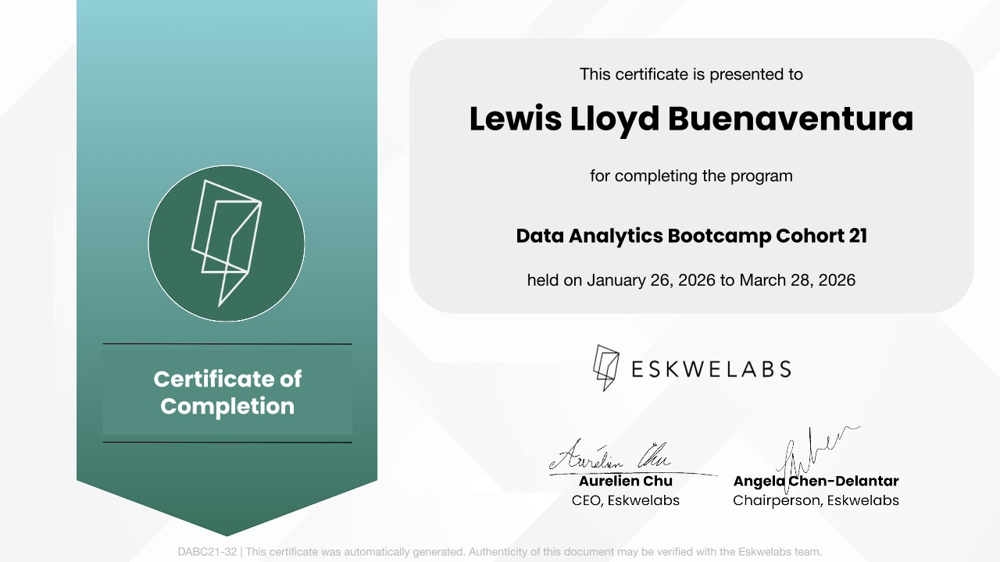

Clarify the Decision
Define the business question, decision owner, and what action the analysis should trigger.

I turn raw, messy data into dashboards and systems that actually get used. Currently a Digital Data Analyst at UAS — a startup environment where I own end-to-end analytics: from Power BI dashboards connected to live APIs, to CRM and inventory systems in Excel that non-technical teams rely on daily.
My background isn't just technical. Years of executive support and investment research taught me how to ask the right business question before touching a single dataset. That mindset carries into everything I build.
Certified through Eskwelabs' Data Analytics Bootcamp. Always building. Never done.
My process is built for stakeholder reality: unclear asks, messy data, changing requirements, and outputs that still need to ship.
 OPEN CASE STUDY
OPEN CASE STUDY
An end-to-end financial reporting build: consolidating monthly P&L, revenue, and expense data into one Power BI report. Placeholder copy — describe the variance analysis vs. budget, margin trends by segment, and the executive summary view that leadership actually reads. Close with the outcome: reporting time cut, decisions accelerated.
 OPEN CASE STUDY
OPEN CASE STUDY
Analyzed Italy's COVID-19 public health dataset to trace infection waves, regional disparities, and mortality patterns. Placeholder copy — walk through cleaning messy public data, the time-series exploration, and the visualizations that made a complex crisis legible for non-technical stakeholders.
 OPEN CASE STUDY
OPEN CASE STUDY
A climate policy dashboard mapping Southeast Asia's CO₂ emissions, focused on Thailand's decarbonization path. Placeholder copy — describe emissions baselines, sector breakdowns, and the scenario views toward the 1.5°C target, designed to be read by policy audiences, not just analysts.

OPEN CASE STUDYAnalyzed 2,251 Glassdoor data analyst postings to understand how salary estimates vary by sector, skills, and company location. The project is split into a cleaning notebook and an EDA notebook, then translated into a stakeholder-ready deck. The dashboard is intentionally to follow.
Sales and operations teams lacked real-time visibility into pipeline health, inventory status, and lead follow-ups — relying on scattered manual updates.
Power BI dashboards, CRM pipeline tracking, and inventory reporting systems connected to live data sources.
Real-world datasets — labor market, COVID-19, global emissions — needed to be cleaned, analyzed, and translated into insights for non-technical stakeholders.
End-to-end analysis workflows using Python, SQL, and data visualization — from raw data to stakeholder-ready dashboards.
Three Partners needed fast, reliable insight across multiple active deal pipelines to make time-sensitive investment decisions.
Research briefs, dataset analysis, and workflow tracking across concurrent diligence projects.
Market decisions required consistent, data-backed analysis rather than reactive or emotional trading.
A disciplined analytical framework combining market research, trend tracking, and structured trading logs.
Completed Cohort 21 from January 26, 2026 to March 28, 2026. This certificate supports the portfolio narrative: technical fundamentals, analytical thinking, and stakeholder-ready storytelling.
View certificate
Placeholder testimonial — a manager or colleague describes a specific outcome you delivered and what it was like to work with you. Two to three sentences lands best.
Placeholder testimonial — ideally someone non-technical who relied on a dashboard you built. Their trust in the numbers is the story here.
Placeholder testimonial — a mentor or peer from Eskwelabs speaking to your analytical rigor or how you present findings.
I'm open to dashboard projects, analytics consulting, and full-time roles. Let's figure out what your data is trying to say.